Etajima, Hiroshima: things to do, food and stays
Etajima · Hiroshima
Etajima
Highlighted on the Hiroshima map.
Stay
えたじま温泉 江田島荘
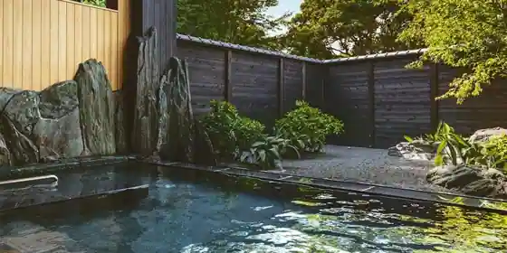
Etajima Onsen Eda Shima So
Inn at Etajima Onsen in Nomi, Etajima.
Dining
OYSTER CAFE ETAJIMA
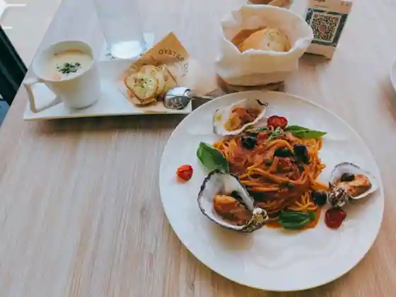
OYSTER CAFE ETAJIMA
江田島オリーブファクトリー
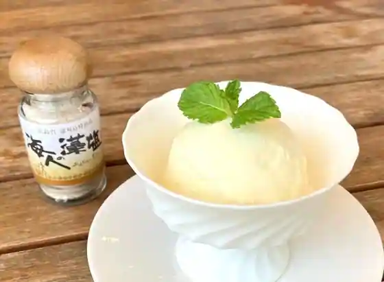
Eda Shima Oribufakutori
島の台所 旬彩
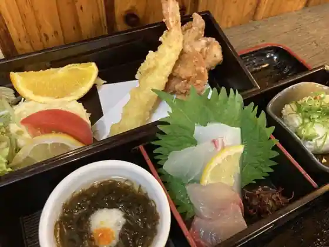
Shima No Daidokoro Jun Sai
江田島荘
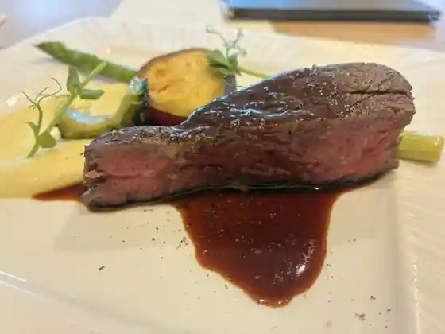
Eda Shima So
讃岐うどん 手打ちそば めん処 にしむら庵
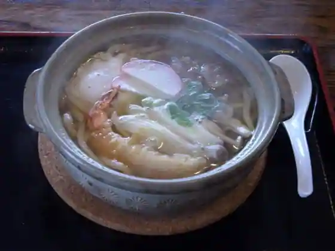
Sanuki Udon Teuchi Chisoba Men Tokoro Nishimura Iori
シラスヤ イーズ
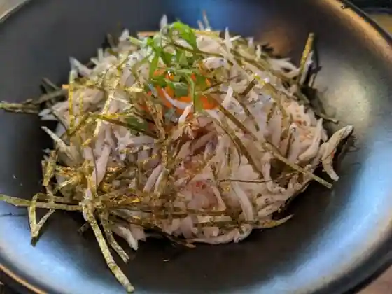
Shirasuya Izu
合正ガーデン
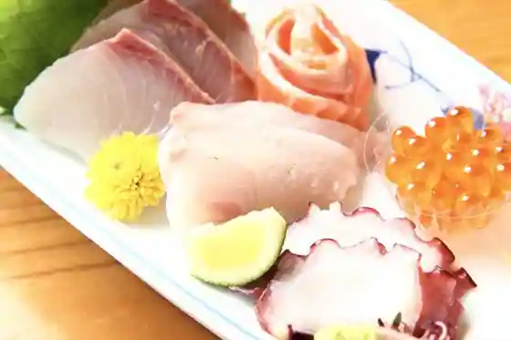
Go Sei Garden
ハジマリノテラス
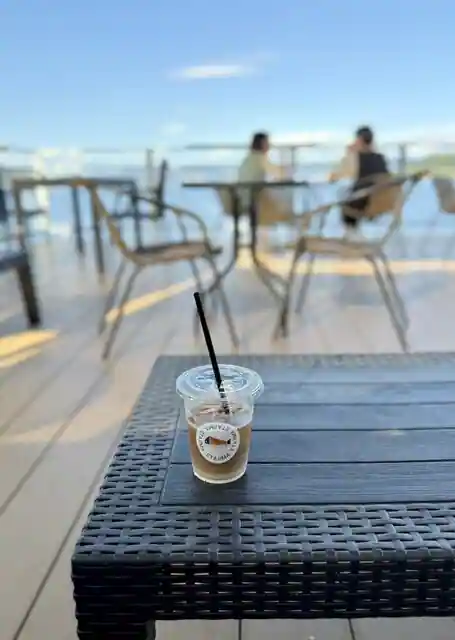
Hajimarino Terrace
てくてくのさつまいも本舗
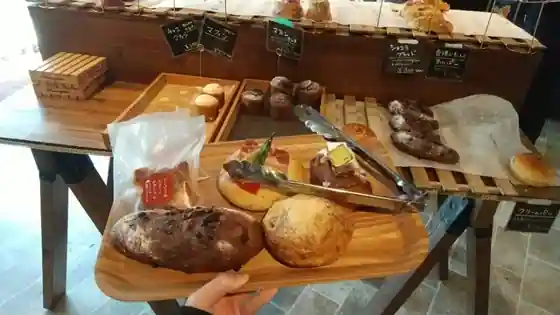
Tekutekunosatsumaimo Honpo
坪希
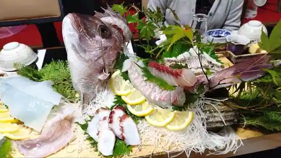
Tsubo Mare
中華料理 紅来軒
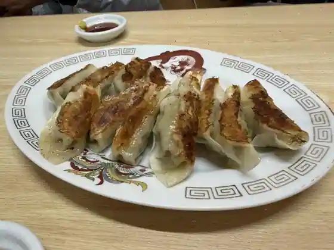
Chukaryori Kurenai Rai Ken
Sugos Cafe
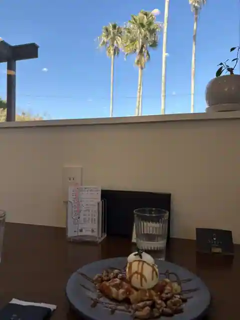
Sugos Cafe
江戸前 一品料理 すし柳
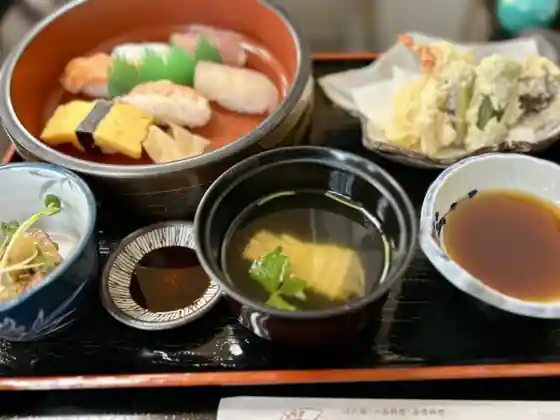
Edo Mae Ippin Ryori Sushi Yanagi
locavore
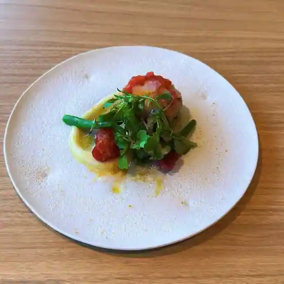
locavore
和伊菜 灯
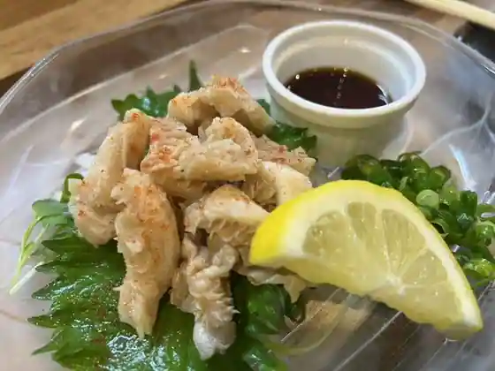
Wa I Na Tomoshibi
寿司 生簀料理 割烹 大学
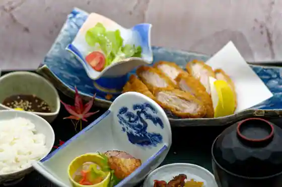
Sushi Ikesu Ryori Kappo Daigaku
しまのぱん souda！
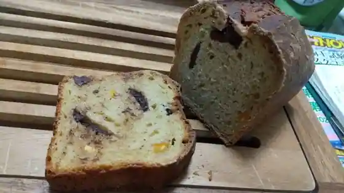
Shimanopan souda!
ねんごろ なじま
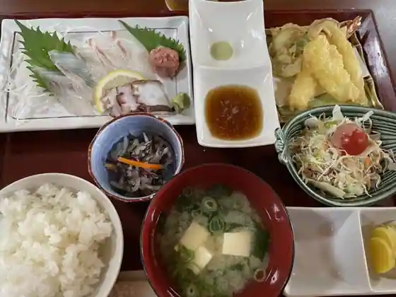
Nengoro Najima
天ぷら・一品 天せい
Tenpura Ippin Sei
ふれあいプラザ さくら
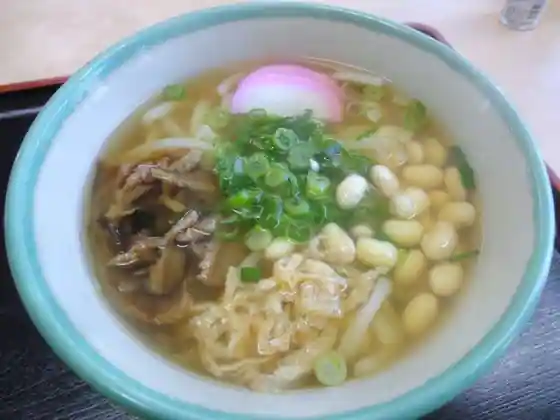
Fureai Plaza Sakura
御菓子司 岡林花月堂
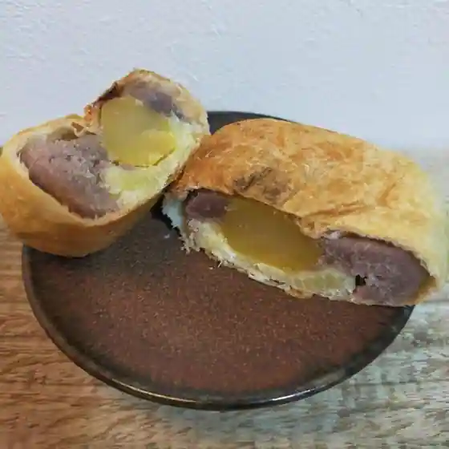
O Kashi Tsukasa Okabayashi Kagetsu Do
きまぐれ亭
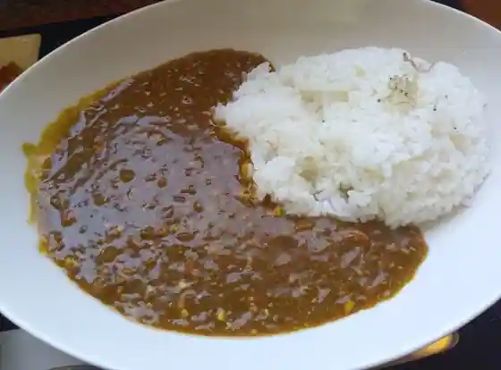
Kimagure Tei
Sights
Kaijojieitai Dai 1 Jukka Gakko (Kyukaigun Heigakko)
Kyukaigun Heigakko Daikodo
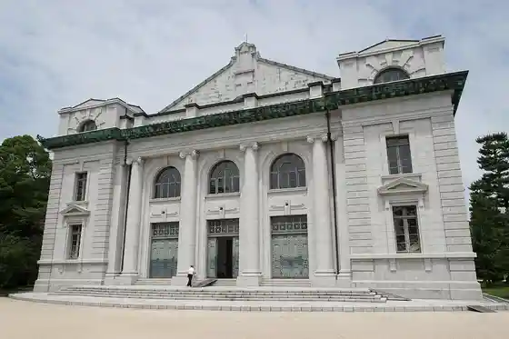
Kyoiku Sanko Kan
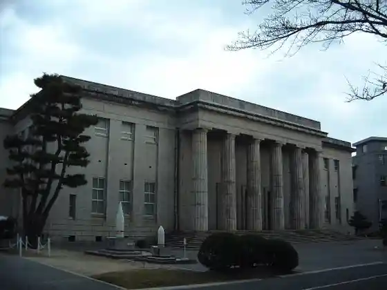
Shoyo Minato
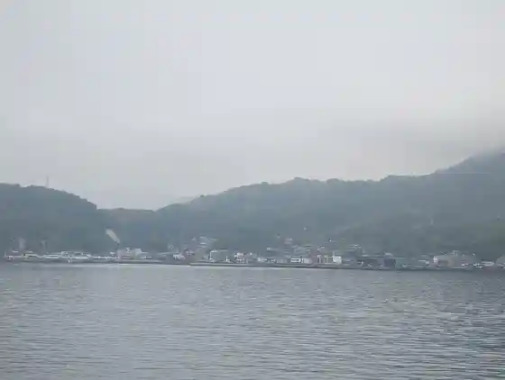
Furutaka Yama